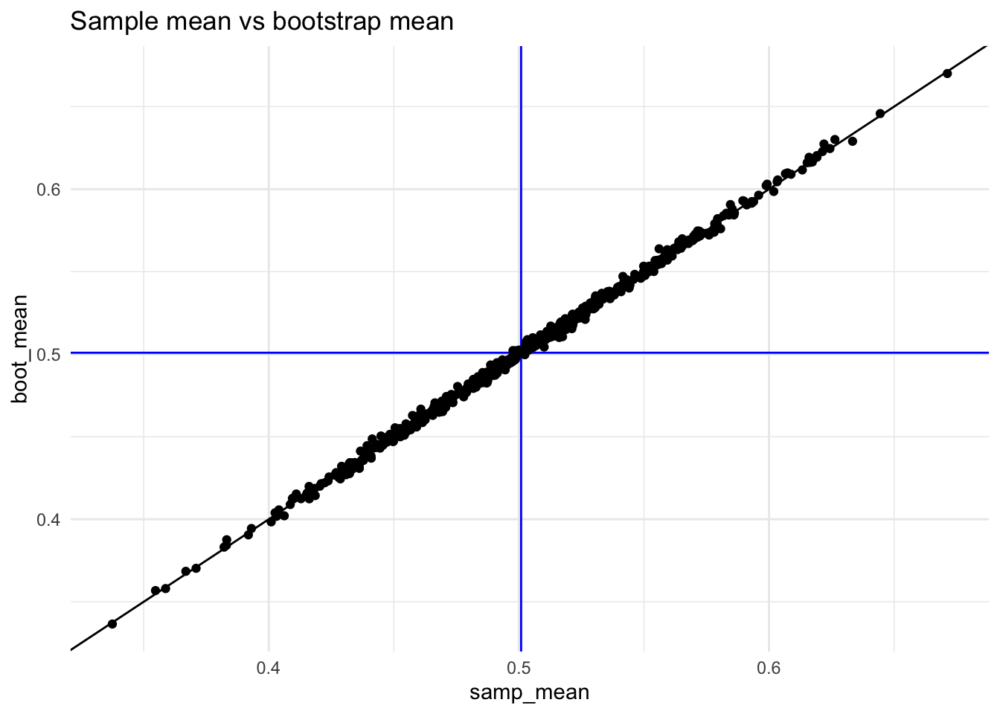

library(dplyr)
library(ggplot2)
#' Simulate random samples to estimate confidence intervals and bootstrap
#' estimates.
#'
#' @param pop a numeric vector representing the population.
#' @param n sample size for each random sample from the population.
#' @param n_samples the number of random samples.
#' @param n_boot number of bootstrap samples to take for each sample.
#' @param seed a seed to use for the random process.
#' @param cv critical value to use for calculating confidence intervals.
#' @return a data.frame with the sample and bootstrap mean and confidence
#' intervals along with a logical variable indicating whether a Type I
#' error would have occurred with that sample.
bootstrap_clt_simulation <- function(
pop,
n = 30,
n_samples = 500,
n_boot = 500,
cv = abs(qt(0.025, df = n - 1)),
seed,
verbose = interactive()
) {
if(missing(seed)) {
seed <- sample(100000)
}
results <- data.frame(
seed = 1:n_samples,
samp_mean = numeric(n_samples),
samp_se = numeric(n_samples),
samp_ci_low = numeric(n_samples),
samp_ci_high = numeric(n_samples),
samp_type1 = logical(n_samples),
boot_mean = numeric(n_samples),
boot_ci_low = numeric(n_samples),
boot_ci_high = numeric(n_samples),
boot_type1 = logical(n_samples)
)
if(verbose) {
pb <- txtProgressBar(min = 0, max = n_samples, style = 3)
}
for(i in 1:n_samples) {
if(verbose) {
setTxtProgressBar(pb, i)
}
set.seed(seed + i)
samp <- sample(pop, size = n)
boot_samp <- numeric(n_boot)
for(j in 1:n_boot) {
boot_samp[j] <- sample(samp, size = length(samp), replace = TRUE) |>
mean()
}
results[i,]$seed <- seed + i
results[i,]$samp_mean <- mean(samp)
results[i,]$samp_se <- sd(samp) / sqrt(length(samp))
results[i,]$samp_ci_low <- mean(samp) - cv * results[i,]$samp_se
results[i,]$samp_ci_high <- mean(samp) + cv * results[i,]$samp_se
results[i,]$samp_type1 <- results[i,]$samp_ci_low > mean(pop) |
mean(pop) > results[i,]$samp_ci_high
results[i,]$boot_mean <- mean(boot_samp)
results[i,]$boot_ci_low <- mean(boot_samp) - cv * sd(boot_samp)
results[i,]$boot_ci_high <- mean(boot_samp) + cv * sd(boot_samp)
results[i,]$boot_type1 <- results[i,]$boot_ci_low > mean(pop) |
mean(pop) > results[i,]$boot_ci_high
}
if(verbose) {
close(pb)
}
return(results)
}Bootstrap vs Standard Error Confidence Intervals
R
Statistics
A student recently asked whether bootstrap confidence intervals were more robust than confidence intervals estimated using the standard error (i.e. \(SE = \frac{s}{\sqrt{n}}\)). In order to answer this question I wrote a function to simulate taking a bunch of random samples from a population, calculate the confidence interval for that sample using the standard error approach (the t distribution is used by default, see the cv parameter. To use the normal distribution, for example, set cv = 1.96.), and then also calculating a confidence interval using the boostrap.
Uniform distribution for the population
Let’s start with a uniform distribution for our population.
pop_unif <- runif(1e5, 0, 1)
ggplot(data.frame(x = pop_unif), aes(x = x)) + geom_density()
The mean of the population is 0.5008915. We can now simulate samples and their corresponding bootstrap estimates.
results_unif <- bootstrap_clt_simulation(pop = pop_unif, seed = 42, verbose = FALSE)5.8% of our samples did not contain the population mean in the confidence interval (i.e. Type I error rate) compared to rmean(results_unif$boot_type1) * 100`% of the bootstrap estimates. The following table compares the Type I errors for each sample compared to the bootstrap estiamted from that sample.
tab <- table(results_unif$samp_type1, results_unif$boot_type1, useNA = 'ifany')
tab
FALSE TRUE
FALSE 470 1
TRUE 1 28In general committing a type I error is the same regardless of method, though there were 1 instances where the bootstrap would have led to a type I error rate where the standard error approach would not.
The following plots show the relationship between the estimated mean (left) and condifence interval width (right) for each sample and its corresponding bootstrap.
results_unif |>
ggplot(aes(x = samp_mean, y = boot_mean)) +
geom_vline(xintercept = mean(pop_unif), color = 'blue') +
geom_hline(yintercept = mean(pop_unif), color = 'blue') +
geom_abline() +
geom_point() +
ggtitle("Sample mean vs bootstrap mean")
results_unif |>
dplyr::mutate(samp_ci_width = samp_ci_high - samp_ci_low,
boot_ci_width = boot_ci_high - boot_ci_low) |>
ggplot(aes(x = samp_ci_width, y = boot_ci_width)) +
geom_abline() +
geom_point() +
ggtitle('Sample vs boostrap confidence interval width')

Skewed distribution for the population
We will repeat the same analysis using a positively skewed distribution.
pop_skewed <- rnbinom(1e5, 3, .5)
ggplot(data.frame(x = pop_skewed), aes(x = x)) + geom_density(bw = 0.75)The mean of the population for this distribution is 2.99792
results_skewed <- bootstrap_clt_simulation(pop = pop_skewed, seed = 42, verbose = FALSE)
mean(results_skewed$samp_type1) # Percent of samples with Type I error[1] 0.05mean(results_skewed$boot_type1) # Percent of bootstrap estimates with Type I error[1] 0.052# CLT vs Bootstrap Type I error rate
table(results_skewed$samp_type1, results_skewed$boot_type1, useNA = 'ifany')
FALSE TRUE
FALSE 473 2
TRUE 1 24results_skewed |>
ggplot(aes(x = samp_mean, y = boot_mean)) +
geom_vline(xintercept = mean(pop_skewed), color = 'blue') +
geom_hline(yintercept = mean(pop_skewed), color = 'blue') +
geom_abline() +
geom_point() +
ggtitle("Sample mean vs bootstrap mean")
results_skewed |>
dplyr::mutate(samp_ci_width = samp_ci_high - samp_ci_low,
boot_ci_width = boot_ci_high - boot_ci_low) |>
ggplot(aes(x = samp_ci_width, y = boot_ci_width)) +
geom_abline() +
geom_point() +
ggtitle('Sample vs boostrap confidence interval width')We can see the results are very similar to that of the uniform distirubtion. Exploring the one case where the bootstrap would have resulted in a Type I error where the standard error approach would not reveals that it is very close with the difference being less than 0.1.
results_differ <- results_skewed |>
dplyr::filter(!samp_type1 & boot_type1)
results_differ seed samp_mean samp_se samp_ci_low samp_ci_high samp_type1 boot_mean
1 443 3.866667 0.4516466 2.942946 4.790388 FALSE 3.924733
2 474 3.933333 0.4816956 2.948155 4.918511 FALSE 3.956800
boot_ci_low boot_ci_high boot_type1
1 3.044802 4.804665 TRUE
2 3.018549 4.895051 TRUEset.seed(results_differ[1,]$seed)
samp <- sample(pop_skewed, size = 30)
boot_samp <- numeric(500)
for(j in 1:500) {
boot_samp[j] <- sample(samp, size = length(samp), replace = TRUE) |>
mean()
}
cv = abs(qt(0.025, df = 30 - 1))
mean(pop_skewed)[1] 2.99792ci <- c(mean(samp) - cv * sd(samp) / sqrt(30), mean(samp) + cv * sd(samp) / sqrt(30))
ci[1] 2.942946 4.790388mean(pop_skewed) < ci[1] | mean(pop_skewed) > ci[2][1] FALSEci_boot <- c(mean(boot_samp) - cv * sd(boot_samp), mean(boot_samp) + cv * sd(boot_samp))
ci_boot[1] 3.044802 4.804665mean(pop_skewed) < ci_boot[1] | mean(pop_skewed) > ci_boot[2][1] TRUEAdding an outlier
Let’s consider a sample that forces the largest value from the population to be in the sample.
set.seed(2112)
samp_outlier <- c(sample(pop_skewed, size = 29), max(pop_skewed))
boot_samp <- numeric(500)
for(j in 1:500) {
boot_samp[j] <- sample(samp, size = length(samp), replace = TRUE) |>
mean()
}
ci <- c(mean(samp_outlier) - cv * sd(samp_outlier) / sqrt(30), mean(samp_outlier) + cv * sd(samp_outlier) / sqrt(30))
ci[1] 1.647006 4.952994mean(pop_skewed) < ci[1] | mean(pop_skewed) > ci[2][1] FALSEci_boot <- c(mean(boot_samp) - cv * sd(boot_samp), mean(boot_samp) + cv * sd(boot_samp))
ci_boot[1] 2.905153 4.781381mean(pop_skewed) < ci_boot[1] | mean(pop_skewed) > ci_boot[2][1] FALSEIn this example we do see that the presense of the outlier does have a bigger impact on the confidence interval with the bootstrap confidence interval being much smaller.
Sample and bootstrap size related to standard error
Let’s also explore the relationship of n, number of bootstrap samples, and standard error. Recall the formula for the standard error is:
\[ SE = \frac{\sigma}{\sqrt{n}} \]
The figure below plots the standard error against the standard error assuming sigma (standard deviation) is one. As you can see, simply increasing the sample size will decrease the standard error (and therefore the confidence interval).
se <- function(n, sigma = 1) {
sigma / sqrt(n)
}
ggplot() + stat_function(fun = se) + xlim(c(0, 100)) +
ylab('Standard Error') + xlab('Sample Size (n)')Considering again a population with a uniform distribution, the following code will draw random samples with n ranging from 30 to 50 in increments of 15. For each of those random samples, we will also estimate boostrap standard errors with the number of bootstrap samples ranging from 50 to 1,000 in increments of 50.
n <- seq(30, 500, by = 15)
n_boots <- seq(50, 1000, by = 50)
results <- expand.grid(n, n_boots)
attributes(results) <- NULL
results <- as.data.frame(results)
names(results) <- c('n', 'n_boots')
results$samp_mean <- NA
results$samp_se <- NA
results$boot_mean <- NA
results$boot_se <- NA
for(i in seq_len(nrow(results))) {
samp <- sample(pop_unif, size = results[i,]$n)
results[i,]$samp_mean <- mean(samp)
results[i,]$samp_se <- sd(samp) / sqrt(length(samp))
boot_samp_dist <- numeric(results[i,]$n_boots)
for(j in seq_len(results[i,]$n_boots)) {
boot_samp_dist[j] <- sample(samp, size = length(samp), replace = TRUE) |> mean()
}
results[i,]$boot_mean <- mean(boot_samp_dist)
results[i,]$boot_se <- sd(boot_samp_dist)
}The figure to the left plots the sample size against the standard error which, like above, shows that as the sample size increases the standard error decreases. On the right is a plot of the number of bootstrap samples against the standard error where the point colors correspond to the sample size. Here we see the standard error is constant. That is, the number of bootstrap samples is not related to the standard error. The variability in standard error is accounted for by the sample size.
y_limits <- c(0, 0.075)
p_samp_size_se <- ggplot(results, aes(x = n, y = samp_se)) +
geom_point(fill = '#9ecae1', color = 'grey50', shape = 21) +
geom_smooth(color = 'darkgreen', se = FALSE, method = 'loess', formula = y ~ x) +
ylim(y_limits) +
ylab('Standard Error') +
xlab('Sample size (n)') +
ggtitle(latex2exp::TeX("Standard Error (SE = \\frac{\\sigma}{\\sqrt{n}})")) +
scale_fill_gradient(low = '#deebf7', high = '#3182bd') +
theme(legend.position = 'bottom')
p_boot_size_se <-
ggplot(results, aes(x = n_boots, y = boot_se)) +
geom_point(aes(fill = n), color = 'grey50', shape = 21) +
geom_smooth(color = 'darkgreen', se = FALSE, method = 'loess', formula = y ~ x) +
ylim(y_limits) +
ylab('Standard Error') +
xlab('Number of Bootstrap Samples') +
ggtitle('Bootstrap Standard Error',
subtitle = '(i.e. standard deviation of the bootstrap sample)') +
scale_fill_gradient(low = '#deebf7', high = '#3182bd') #+ theme(legend.position = 'none')
cowplot::plot_grid(p_samp_size_se, p_boot_size_se)Lastly we can plot the relationship between the two standard error estimates; the correlation of which is extremely high with r = 0.99.
ggplot(results, aes(x = samp_se, y = boot_se)) +
geom_abline() +
geom_point() +
xlab('Sample Standard Error') +
ylab('Boostrap Standard Error') +
ggtitle(paste0('Correlation between standard errors = ', round(cor(results$samp_se, results$boot_se), digits = 2))) +
coord_equal()